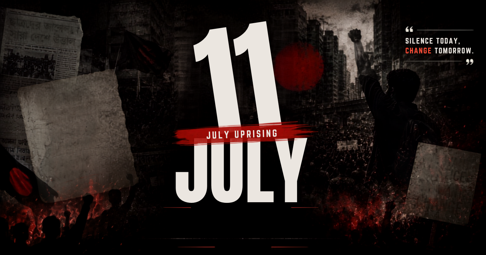

ISTIACK'S JULY CORNER
ইংরেজিতে পড়ুন
ইংরেজিতে পড়ুন

Share Link
Print Article
Print Options
Print in English
Print in Bangla (বাংলায় প্রিন্ট করুন)
Print Both (উভয় ভাষায় প্রিন্ট)
Link Copied to Clipboard!
 ISTIACK'S JULY CORNER
ISTIACK'S JULY CORNER
ISTIACK'S JULY CORNER
ISTIACK'S JULY CORNER